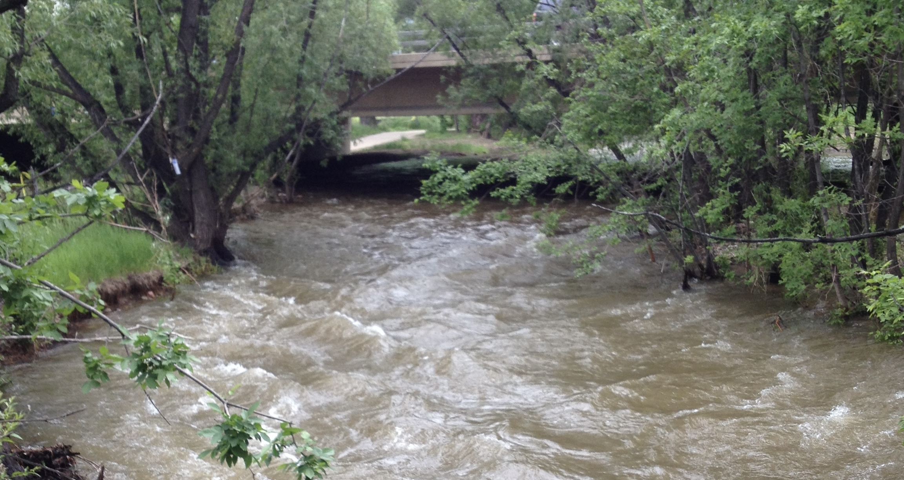

Basis of My Academic Studies

Mathematics & Statistics
Portfolio of Mathematics & Statistics
My main interests are Statistical Analysis, Statistical Learning, Spatial Statistics as applied to Atmospherics, the Mathematics of Political Redistricting, Ethics in STEM, and Psychometrics specifically to improve the human experience. My hobbies include History of Mathematics, Old World Navigation, and Sundials.
Computing
Portfolio of Computing
Although I work in large number of platforms, I prefer to focus on Python, C++, and Fortran for High Performance Computing and R for Statistical Programming. My time in Software Configuration Management focused on high-risk products requiring a high level of control. My recent work focuses on Statistical Learning.
Business Intelligence
Portfolio of Business Intelligence
My strengths are SQL-based Extract, Transfor, and Load (ETL), AWS E2, and Machine Learning-based Analytics such as Market Basket Analysis or Neural Networks. I chose additional study in Machine Learning from the business perspective because of the fast, savvy payload techniques involved.
Data Systems
Portfolio of Data Systems
I work with both structured databases and big data (data streams, data lakes, etc.) I believe there are advantages to working with structured databases before moving to large data techniques. Structured databases are one of the best-designed tools on the planet. Big data, especially weather data, are where I would like to focus.